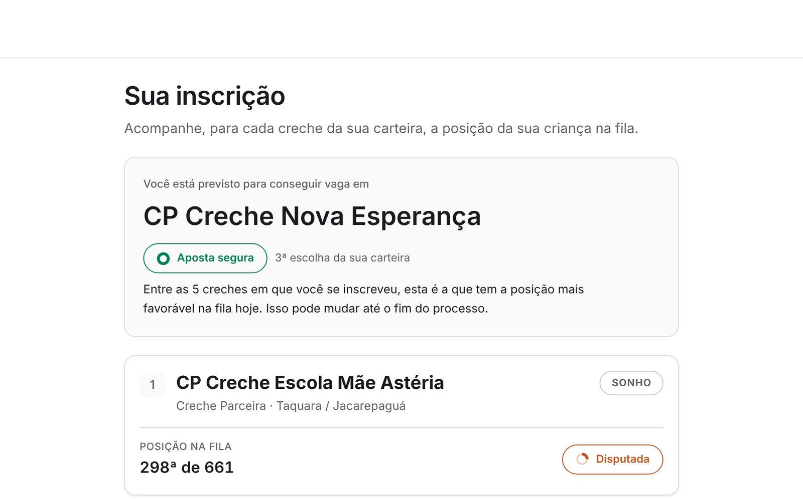
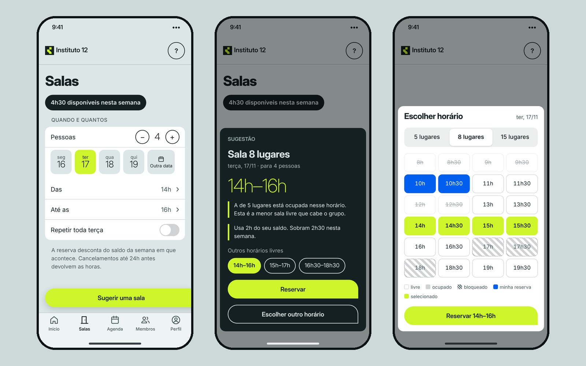

{{e.org}}
{{e.role}}
{{e.when}}
{{e.summary}}
- {{pt}}


{{heroCapD}} · {{heroCapA}}
{{h.big}}
{{h.title}}
{{h.sub}}
経験
一 · 01
{{e.role}}
{{e.when}}
{{e.summary}}
作品
二 · 02
受賞
三 · 03
{{a.org}}
{{a.desc}}
{{t.olySub}}
{{o.name}}
{{o.result}}
{{o.years}}
活動
四 · 04
{{l.role}}
{{l.desc}}
学び
五 · 05
{{ed.title}}
{{ed.where}}
{{ct.title}}
{{ct.where}}
連絡
六 · 06
{{t.contactLine}}
© 2026 Evandro Ichiro Fuse Sakai · Rio de Janeiro